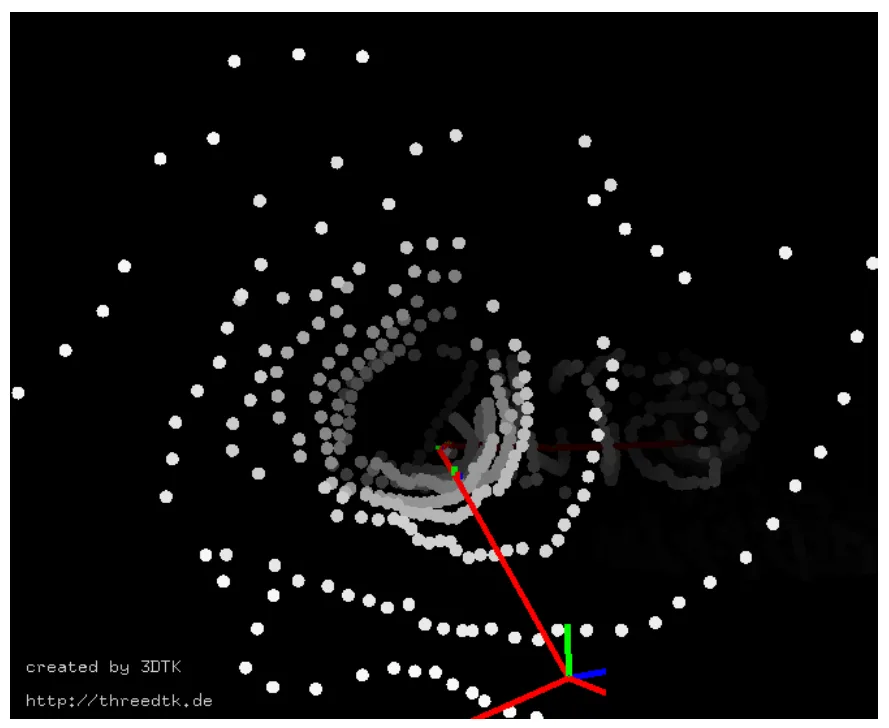
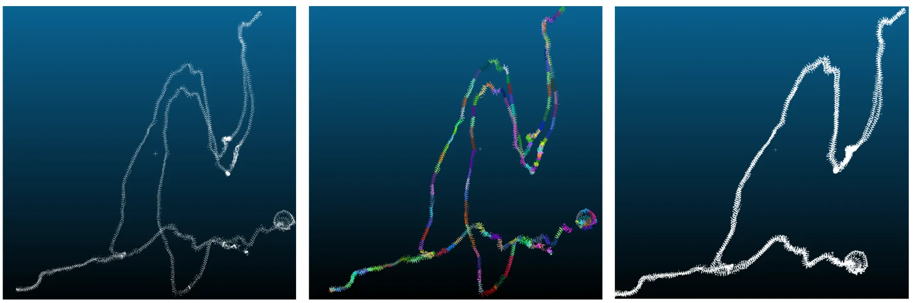
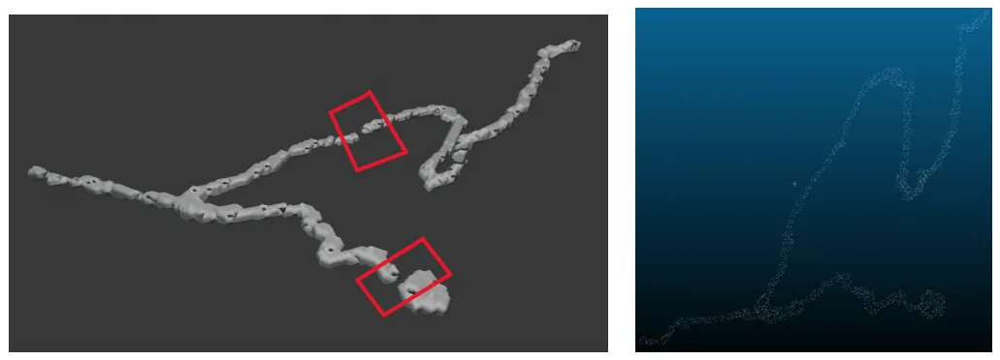
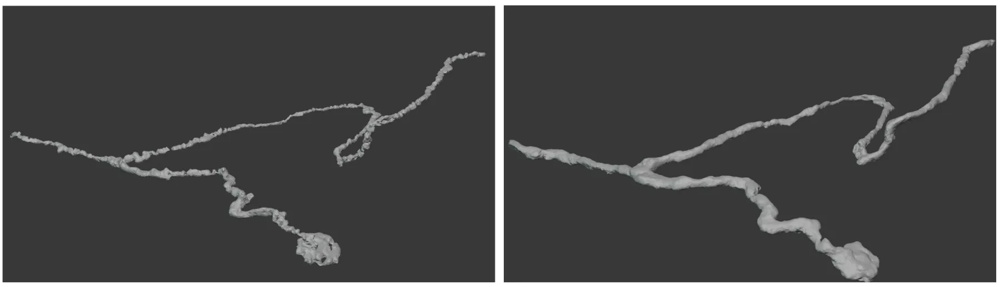
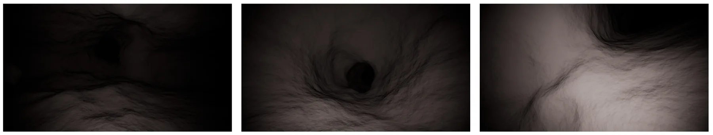

基于旋转声呐数据的水下喀斯特场景三维重建探索Towards 3D karst underwater scene reconstruction from rotating sonar data
特殊传感器和地下/水下场景重建与常规 SLAM 不同，但连续时间 SLAM、稀疏噪声观测和 mesh reconstruction 组合具有很强参考价值。
一句话工作总结
该工作用 continuous-time SLAM 修正旋转声呐轨迹漂移，再用两阶段深度表面重建生成水下喀斯特管道 3D mesh。
摘要
喀斯特含水层是重要淡水资源，但其地下几何复杂且认知不足，带来显著风险。由于水下探索得到的声呐数据稀疏且噪声较大，同时导航估计存在漂移，标准三维重建方法很难直接应用。本文提出一个从 sonar profiler 重建水下喀斯特管道的流水线：先用 continuous-time SLAM 修正轨迹漂移，再结合新的两阶段深度学习表面重建方法，生成可沉浸浏览和导航的三维 mesh，用于水文地质分析。
Karst aquifers provide critical freshwater resources but pose significant hazards due to their complex and poorly understood subsurface geometry. Mapping these environments is challenging because sonar data from underwater exploration is sparse and noisy, while navigation estimates suffer from drift limiting standard 3D reconstruction methods. We present a pipeline for reconstructing underwater karst conduits from a sonar profiler. We combine a continuous-time SLAM approach to correct trajectory drift with a novel two-stage deep learning method for surface reconstruction, producing an immersive and navigable 3D mesh for hydrogeological analysis.
中文解读摘录
- 链接：abs / PDF；作者：Georgios Evangelos Margaritis, Lionel Lapierre, Simon Rohou, Zhi Yan, Andreas Nüchter, François Goulette；类别：cs.RO；备注：LoWi Workshop；采集 score=12。
- 核心思路：面向 karst aquifer / underwater conduit 的稀疏、噪声旋转声呐数据，组合 continuous-time SLAM 与两阶段深度学习表面重建，生成可导航 3D mesh。
- 与用户方向的关系：虽然不是常规视觉/激光 SLAM，但“稀疏声呐 + 漂移轨迹 + 连续时间轨迹修正 + 表面重建”非常适合作为水下/地下三维重建案例跟踪。
- 关注点：建议查看连续时间 SLAM 的状态参数化、声呐 profiler 的观测模型、两阶段表面重建如何处理空洞与噪声，以及最终 mesh 是否可用于后续定位或路径规划。
图表/页面预览

{kind=link}

{kind=link}

{kind=link}

{kind=link}

{kind=link}
